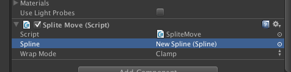

Unityで曲線状にオブジェクトを動かすSuperSplinesを使ってみた
概要
Splineに乗って動く、みたいなツールを探していた。
動作のデザインをカウンタで制御、とか、面倒なんだけど、動作を式化するプログラムを書くのも面倒だったので探してみたら
あったあった。
SuperSplines
http://u3d.as/content/evoluo-technologies/super-splines/2kK
で、そのAPI
http://www.super-splines.de/documentation/example3.html
本家紹介ムービー(あるんじゃね？って言われて探したらあった、、クソっ先に知っていれば、、)
http://www.youtube.com/watch?v=AAfJDQggRvA
やりたい事
移動を表す関数 Aに対して、
A(0)とか A(0.4)とか A(1) とか入れると、想定されたライン上の特定の位置に居るような式が欲しかったのよさ。
具体的には、
transform.positon = A(0).transform;//位置
transform.rotation = A(0).rotation;//傾きとか回転
とか。
任意の数値について、「特定のタイミングの値」での、ある線上のパラメータを返す、みたいなの。
線って書いたけど、テキトーな1,2次曲線とか直線、円ならまあ式が単純だし自作してもサクッと出来るし楽なんだと思うのですが、
線に沿って人を歩かせて、向きとか傾きを出す、みたいなのを作るとしんどいわけで。
上記式を提供してくれるAssetをちょっと探していた。
そこでSuperSpinesですよ。
購入
25$のほうを買いました。
Pro版というか上位版もあるんだけど、見てると差が「ソースコード入ってまっせ！」だったので、
うん、今は使えれば良いからいいや！
使い方
適当にCubeを用意。SuperSplinesはインストール済み。
Splineを作成
GameObject > CreateOther > Spline > HermiteとかBezierとか曲線のタイプ。


で、こんなのが出る。 4つの点から構成されたSpline。これはBSpline。
始点と終点を結ぶ線が、間の点に引っ張られるような感じで補完される。

４つの点を勝手にキレイな曲線で結んでくれている。あとは、適当に編集して遊ぶ。
AutoCloseにチェックを入れると、線が閉じて輪になる。
(下のは２、３回クリックすると再生できるんじゃないだろうか。きっと)
Cubeを動かす
で、これをオブジェクトに対応させるには、適当なScriptを用意してその中でこんな感じに書けば良い。
SplineMove.cs
using UnityEngine;
using System.Collections;
using SplineUtilities;
public class SplineMove : MonoBehaviour {
//Splineオブジェクト
public Spline spline;
//移動カウンタ
float counter;
float passedTime;
// Update is called once per frame
void Update () {
passedTime = (counter % 101) * 0.01f;
//passedTimeの撮り得る値は0から1.00
float clampedParam = SplineUtils.WrapValue(passedTime, 0f, 1f, WrapMode.Clamp);
//表示上の変形を適応する
transform.position = spline.GetPositionOnSpline( clampedParam );
transform.rotation = spline.GetOrientationOnSpline( clampedParam );
}
void FixedUpdate () {
counter ++;
}
}
こいつをCubeにアタッチ。

で、Splineのところに、先ほど作成したNew Spline をアタッチ。

動かすと、こんな感じ。
ちなみにこれはBSplineではなくHermite。すべての点を通る曲線を補完している。
(下のも２、３回クリックすると再生できるんじゃないだろうか。きっと)
いやあ、便利。
特定のチェックポイントを通る、とかが簡単に作れるね！